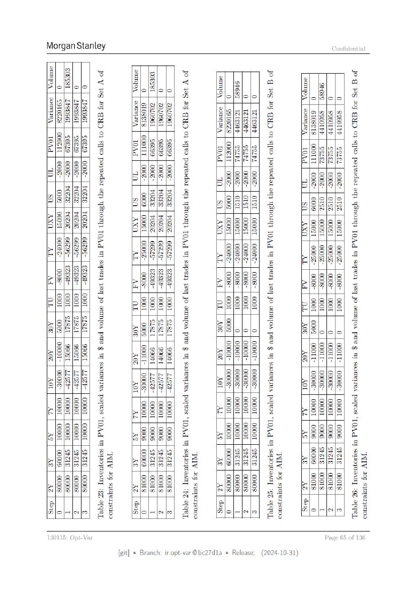

モデルテスト
ページ 065
5.2 シナリオ分析とストレステスト 以降
{kind=link}

原文OCRテキスト
Morgan Stanley Confidential
I Fd
Pea
ro}
oe
2)
2
|S 3
CI
2 CI
6 z é
C1
S| pS < Z| |8 < k faa)
S\o[Zlole} <> Siz
IF IISIF]
=3 Z|S| _ 1%& .> El
S|
fs|e >
Dn n IF lofisjolo] A MI IBlolo| ®
Shelter |e me 2 he Pay
SISIZ|ZE
B28]
Z\ZAIS|SIB) =a
5 Slelalala
EEE]
IZ|SISIS|
5
=a gheleeia|
BISIAIRIA)
=ai] 2SIZIB IBIS 2i=)
ZIAD |S |B BI |S Fa SlSIgigin
SIBSISIE} oOa Z|EISR/E|IR]
FRISIR =OS ISB Ele]
E|QISSIS| =oO LSaEIS
(SIS|S |S
EIEIS| ©
Elslsls]
SIESSel =S E
=Slelebs| e& FREFF 22 FRR) s2
FISRIER) 3 S\ISISSis| S |Shopehe} S s a
AJAPSISIS]| & EFS) = SiSpspes| = S|SiSh3h3) =
slsis|s| z= Perri
slelel s2 EISIEEle| =3 Elsie]
RISER) =
AlSiges| = sigisig| = 2 3
ER AIRR) 2 BRIER) £ siggis| £ eisigls| =
rook! peal baal pul
=@ preer| 2@ BRIAR]
rprypeye
25 BISISIS) Pee
ae
&°
VISIS|S(R| Is|SiS|z) 8 a a
SISA
i Be] Ej=% SSSR)
PSles feo fo} e=-S LISSEIE)
i fie |f
SiSpspeps) =
ER} selg|e|
IAlSISiRis|
KSIZisl\s\S} = =&
-ISISS]| = slelel 82 8
BEREE}
bal
=2
> GEBEE)2
BERRI] = EEE)
SEpssts| 2S= Elselele|
KIS s\sls| ==Ss
BESS}
iS Ss |S ~
Ss S
seis}
slgigg
(Selsey
== Slalele
Sissies}
=& sieisis|
=& slelels|
=
&
ER] 3. SPS BBB] 42
ERIBEIS] -(S\S|s|s)
ERRRIS| 82 ESBS)
SEE) =
TRIAS &
cla
skies
Rigg) cs miele aols
SIRS
oi
slelele|
z
==
S Is \o iS g
eiselele| = |S\BBIe| = I. S/S sie 8 | jsisigys}
EPIT IF) 32 FISISISIS]
Bs | YT
2% IEee |B\B\2\2)
| 472 IF |
2a Elzlelz/2|
Bu |? |? °)
=@
elelele Ss = i
PISS} = lglelgie| = 5|gisigis| = lelslels] =
FIFI) 2 EISISEE) 2 FIF|FEIS) 2 FSES|E) 2
52 lohehel E= le 2E 2E
§ (Selig $ |S $ |S €
3
SiS le ie ie
oa fim | la la 3g
BB lololo }
SlSlelele z
lo a slolelo| = slelole| =
Sisisig}
SIS l\Ss « Slslele|
Sree « .|S|E(S/5|
S/S\sls « sigs]
ISIS ISS =
RITES]
S\|S falas) 3
2 EEIss\s|
IS |S S| 3
2 SIS|SlS|S|
RRR ] 8
= iS
RR FF]
J
2
sielek| & g elslels| £& elelele| =
SISK]
ISIS]
&3 Sickle}
(SPSS
2
hs] ==
S\SS\5|
e\sisele|
2= sigs
=\SIS|SIS| 3
EBRAR|
EF = ERISSS|
ERE =F |2 fF FF a ElR
Ell BRIS]
od vv vv em}
SEEE) 4& SEEE| =2 -EEELE| =8 SESE) =2
clelc|S a a s\sisis a = So|o o
RIS|S|SS} eelsisie} SIS|S|s| RISISIS|S|
slelekel] =a
é
a
elelele| =
sigisis
a
slelslcl =a
Sissi] = sigisig| = IS|S|S S| = IE SISIS| =
BISSISs} & BSS) & BIS|S\S\S| & Ble elel=) &
s a 2 e
elshohs| 2 hohahe| 2 shohehe} x Spspsps| ¢
SSISS) Sa SSS} 2s Sls is Bg Ba
-EERS|
B|ee\|s|5) 22
22 LESERl
(E|RRR| 2
£2 IEEE)
BSRRR) £22 SIRE]
FEPFER) BS
2S
B. oe 3. slslele] 2s
eglss| £= Sisjgis| 2 sisigis| 24 Sess) 2s
|SS\sisis
iS\s
IN |50 150 |6 |90
aan
ge
2 mISISIS IS
ISisicis
IN ]90 |90 |90 }o0
7 g
Sn
a4
BISiSislé
Sjsijsis
HIS isisis an
Poel
g Algklzle
I> |S lS sla Sn
gs
2
a 2s 5 2k a 2k S 2s
2
IAlolH|a|m| a2
= 8 2
In|jola|a|o| a2 8
ws z
JAlo|a|s|eo} 24 8
"a lB|o|4
Sse] a2
&
130115: Opt-Var Page
65 of 13¢
[git] » Branch: ir.opt-var @be27d1a » Release: (2024-10-31)